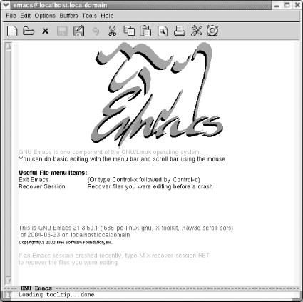

点击Emacs图标或者在命令行中输入“Emacs”然后按回车键就可以启动Emacs了。1
| 点击Emacs图标或者在终端中输入：emas 回车 |
|  |
| 启动Emacs |
你会看到一些重要菜单项的描述信息和Emacs的的版本信息。它即可能是个图像启动 画面（见上图）也可能是文字的。这个界面在你输入第一个字符后消失。Emacs把 你带入名为“scratch”的空缓冲区，一个理想练习环境。
1. 不同的操作系统启动Emacs会有所不同。默认情况下，Linux桌面上没有图 标；Windows和Mac OS有（如果你在这些系统中安装了Emacs）。Mac OS将GNU Emacs 安装在 /usr/bin下，在终端下启动时会直接默认运行它。如果在终端下运 行Emacs，将不能使用鼠标，而且还有一些其他限制。在第13章介绍了一些更好 版本的GNU Emacs.